東京大学 2006年 理科 第6問
問題
x>0を定義域とする関数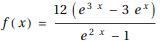について、以下の問いに答えよ。
(1) 関数y=f(x) (x>0)は、実数全体を定義域とする逆関数を持つことを示せ。すなわち、任意の実数aに対して、f(x)=aとなるx>0がただ1つ存在することを示せ。
(2) 前問(1)で定められた逆関数をy=g(x) (-∞<x<∞)とする。このとき、定積分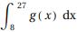を求めよ。
解答
(1)
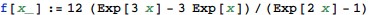
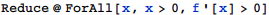
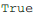
だから、x>0において常にf'(x)>0である。
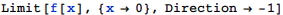
だから、x→+0においてf(x)は-∞に発散する。
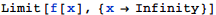
だから、x→∞においてf(x)は∞に発散する。
以上より、f(x)の値域は実数全体であり、狭義単調増加関数であるから、題意は示された。
(2)
f(x)=8およびf(x)=27の解を求める。
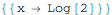
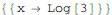
log 2<x<log 3の範囲でy=f(x)のグラフを描画すると、下図。
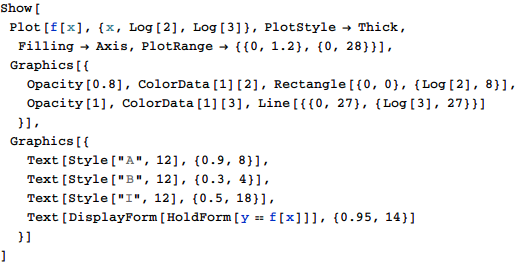
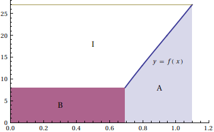
求める積分の値をI、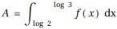、B=log 2×8、S=log 3×27とすると、
I=S-A-Bなので、求める積分値は
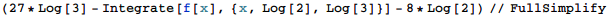
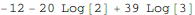
補足・感想
Mathematicaで逆関数はInverseFunctionで記号的に扱えるのだが、残念ながら直接逆関数を積分することはできなかった。